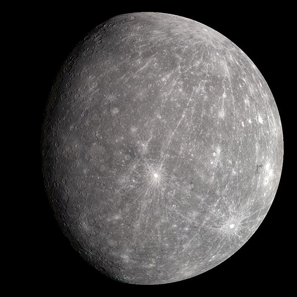

Меркурий
Меркурий -— самая маленькая планета Солнечной системы и ближайшая к Солнцу, вокруг которого она совершает один оборот каждые 87,97 земных суток. Названа в честь древнеримского бога торговли — быстрого Меркурия. Информация о Меркурии относительно скудна, так как в наземные телескопы можно наблюдать только один освещенный полумесяц без особых подробностей. Первым из двух космических аппаратов, посетивших планету, был «Маринер-10», которому удалось сфотографировать около 45 % поверхности планеты с 1974 по 1975 год.Физические характеристики планеты аналогичны Луне. Поверхность Меркурия имеет множество кратеров и гладких плоских участков, как и Луна, у него нет известных естественных спутников и почти нет атмосферы. В отличие от Луны, Меркурий имеет большое планетарное ядро из железа, которое создает магнитное поле примерно на 1 % сильнее магнитного поля Земли. Относительно большой размер ядра делает Меркурий чрезвычайно плотной планетой. Температура поверхности колеблется от −180 до 430 ° C, самые горячие места — экваториальные местности с подсолнечной стороны планеты, а самые холодные — кратеры вокруг полюсов. Зарегистрированные наблюдения Меркурия датируются как минимум первым тысячелетием до нашей эры. До IV века до н. э. древнегреческие астрономы считали планету двумя отдельными объектами: один видимый на восходе солнца, которого они назвали Аполлоном, а другой на закате, названный Гермесом.
Астрономический символ Меркурия, круг над короткой вертикальной линией с крестом внизу и полукругом вверху (☿).